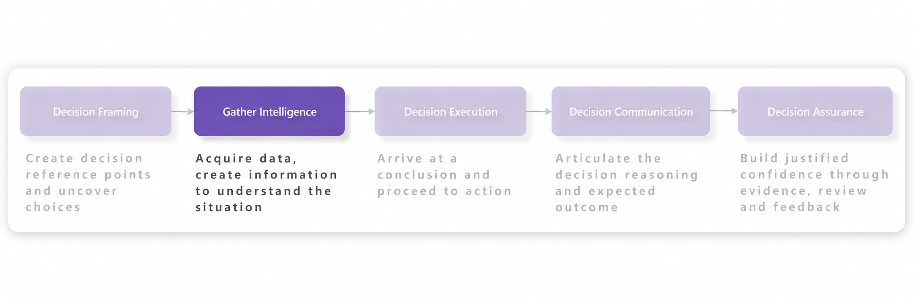
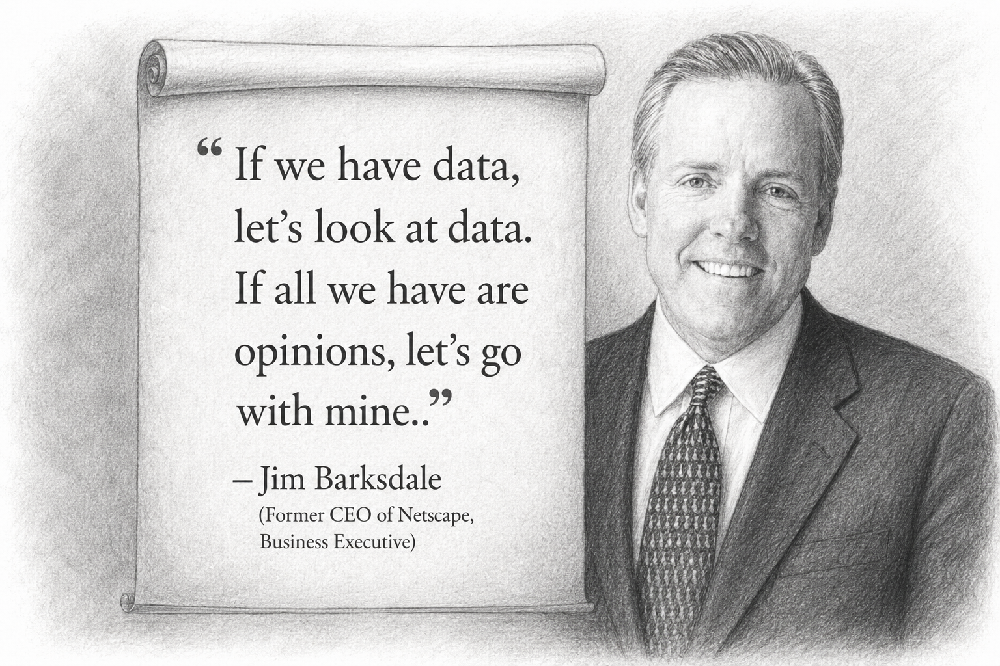
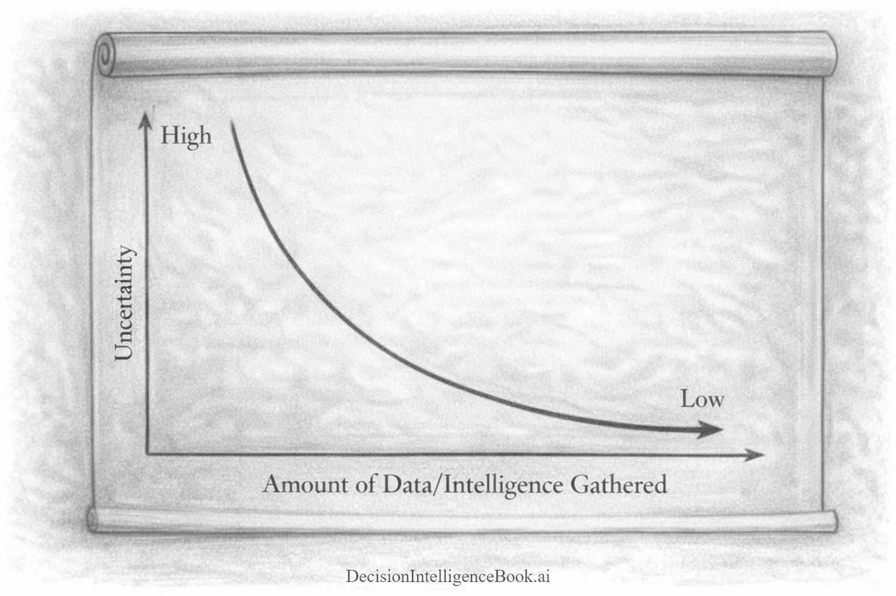
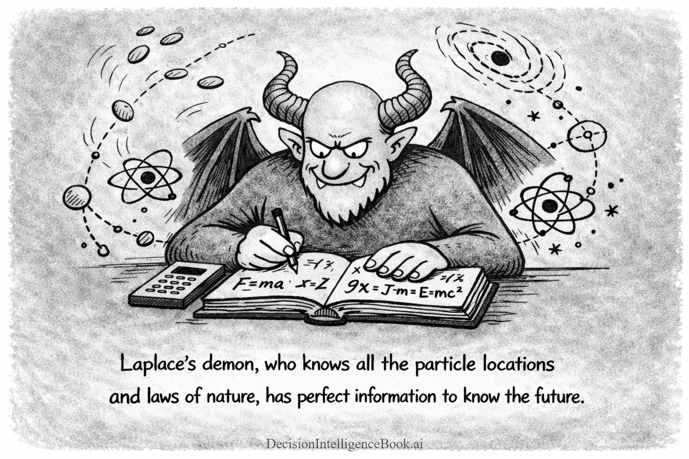
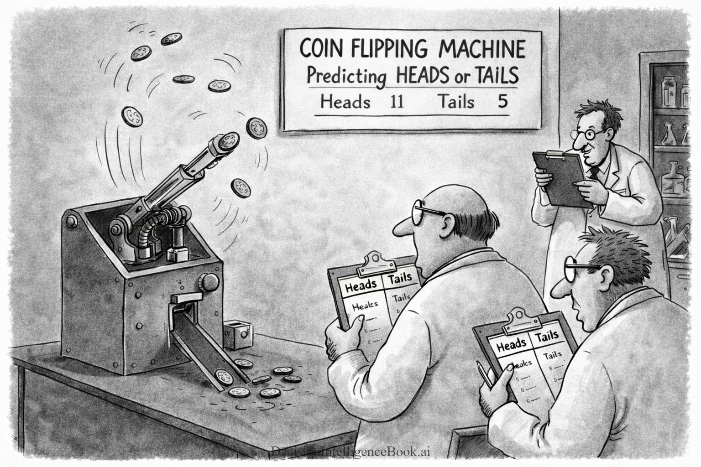
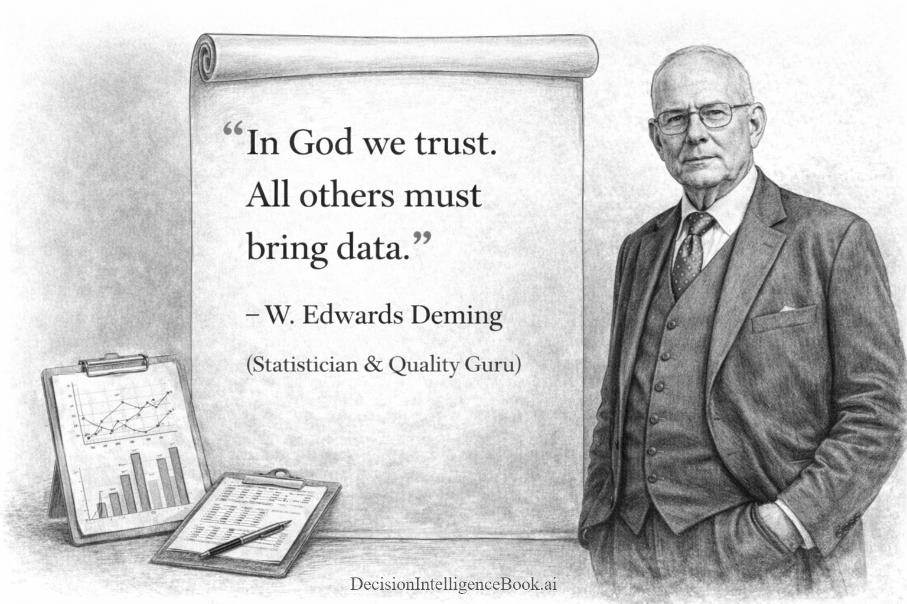

Chapter 1C
Gathering Intelligence
Reducing uncertainty with data, evidence, historical context, and generative AI support.
 Decision Intelligence – Gathering Intelligence
Decision Intelligence – Gathering Intelligence
Introducing Gathering Intelligence¶


Now that framing a decision has been explored, the next step in the Decision Intelligence framework lies in gathering the appropriate intelligence. Traditionally, this step can be overwhelming, sifting through vast amounts of data and battling information overload. The Gathering Intelligence step is a comprehensive process of not only coalescing raw data but also transforming it into high-value information through simple math or analytical methods. It involves evaluating risks, identifying patterns, and interpreting data to extract meaningful insights. By doing so, it helps you understand the situation completely by revealing all relevant factors and their interconnections. This enhanced information is crucial for making informed and effective decisions.
Why is gathering intelligence so vital in decision-making? Because the quality of decisions is only as good as the information you base them on. Think about trying to navigate a new city without a map; you might eventually reach your destination, but not without unnecessary detours and delays. Similarly, without thorough quality intelligence, decisions can be non-optimized, leading to unintended consequences. Gathering comprehensive intelligence reduces uncertainty, uncovers hidden opportunities, and provides a solid foundation for evaluating options. In essence, it transforms guesswork into an quantitative strategy, empowering you to make choices with greater confidence backed by information.
Small amounts of valid intelligence, reduces the uncertainty exponentially. If you know nothing about the environment that you are entering to make a decision, even small amounts of signals, empirical information, past results will dramatically improve your decision posture. Instead of relying on gut feel or incomplete narratives, decisions become anchored in evidence and updated as new information arrives. What is interesting is that gathering more intelligence comes at a cost, and as you do more of it the value of that intelligence decreases. What does this mean? There is a certain inflection point of intelligence value vs the intelligence gathering cost, where you may consider stopping and move on to executing the decision.
The graphic below highlights the relationship between uncertainty and gathered intelligence. Notice the initial deep drop in uncertainty with the initial gathered intelligence. This means that the early intelligence gathered yields the most reduction in uncertainty, because even a small amount of credible information can quickly eliminate the most plausible unknowns. As additional intelligence is collected, the curve begins to flatten, reflecting diminishing returns. Each additive data point still helps, but it tends to refine the picture rather than redefine it. Translating this to real-world use, early intelligence gathering and validation tend to deliver the biggest payoff, while later-stage collection is best aimed at closing specific gaps and testing key assumptions.

Gathering Perfect Intelligence (Information)¶
As you gather more intelligence, it reduces uncertainty. What would happen if you have all the relevant intelligence required to make a particular decision? Pierre-Simon Laplace's thought experiment called "Laplace’s demon" from hundreds of years ago introduced this thought experiment. Imagine an intellect (“the demon”) that, at a single moment, knows the exact position and velocity of every particle in the universe, plus all the laws of nature. If the universe is perfectly deterministic (as classical mechanics seems to suggest), then this intellect could compute the entire past and future with complete certainty. Basically, this is basically equivalent to "a God" who knows all. Therefore, if you have perfect information uncertainty is reduced to 0. You not only have complete intelligence (information), you essentially know what decision will happen and the result that will happen.

This is a lot more than just a thought experiment for hundreds of years ago. The core idea is that with perfect predictability: with enough information and computation, you could predict everything. This has been formalized as various statistical methods to calculate how much intelligence (information) to gather and when to stop. One popular technique is to use Expected Value of Perfect Information (EVPI). EVPI is the maximum amount a decision-maker should pay/invest to eliminate uncertainty by obtaining perfect information before making a choice. EVPI allows the decision-maker to optimize their choices and finals selection path.
Simplified way how-to use EVPI:
- Decide what you’d do right now (using your best guesses). Note the expected payoff
- Pretend you magically knew the future. For each possible outcome, pick the best action. Average those payoffs
- Subtract: EVPI = (magic knowledge average) − (current expected payoff with existing intelligence)
- Continue to Gather Intelligence?:
- If getting better info (research, test, expert, data) costs less than EVPI, it’s potentially worth it
- If it costs more than EVPI, it’s not worth to gather more intelligence (even if the info were perfect)
In the real-world, there are instances where seemingly completely uncertain processes can have explicit known outcomes that can be predicted. For example, to most of us flipping a fair coin is random and that deciding on the outcome feels arbitrary. It is considered so random, that most people consider this a 50/50 bet. However, because the act of flipping a coin happens in our physical world we have much more potential information. In a controlled lab environment, scientists have demonstrated when they apply a certain force to a coin to flip it, they can calculate all the variables and confidently predict whether the coin will land heads or tails. In this specific scenario, scientists have close to "perfect information" and the coin flipping uncertainty is near zero. Therefore, it is easy to use this process to make an effective quality decision of heads vs tails. As mentioned before, in the real-world we don't have access to perfect information or it is too expensive to attain. However, in the future (perhaps with Quantum computers), we will be able to simulate many paths almost continuously getting use closer to "perfect information".

Historical Example of Gathering Intelligence¶
Let's look at the many ways people have collected and shared information over time. Throughout history, humans have gathered intelligence through various means—stories told around campfires, handwritten manuscripts, printed books, and newspapers. Each of these methods represented a leap in how information was shared and preserved. However, access to this intelligence was often limited. For centuries, only the wealthy could afford books or had the literacy skills to read them, while the majority relied on oral traditions or had minimal access to written knowledge. Even as the internet emerged, bridging information gaps, it wasn't until recently that technology became widespread enough to truly democratize access. Let's take a look at two illustrative examples.
As a historical example, consider the tale of King Alfred the Great of Wessex during the 9th century. Facing the threat of Viking invasions, Alfred's kingdom was teetering on the brink of collapse. Instead of charging into battle uninformed, he chose a different approach by disguising himself as a wandering minstrel to infiltrate the Viking camps. Through this daring act, he gathered invaluable intelligence about the enemy's strategies, strengths, and weaknesses. Armed with this insight, King Alfred was able to devise a surprise attack that culminated in the decisive Battle of Edington (Year of 878). This victory not only turned the tide against the Vikings but also laid the foundation for the unification of England. Alfred's story illustrates how gathering of intelligence can empower leaders to make pivotal decisions. In this case a decision that altered the course of history!
This example of Gathering Intelligence is over 1,200 years old. What is even perhaps more interesting, is you might be learning about King Alfred just now. The story of King Alfred continued to "live on" by being passed down through many generations (even perhaps changed and embellished) as folklore, stories and songs. In those days, people would "Gather Intelligence" by assembling together and share the wisdom they have gained themselves. This was the way most of our human intelligence has been passed down for thousands of years. Eventually humans devised ways to scale communication primarily through writing and reading. Stories like this were persisted many times in books for many to "gather intelligence" from in the future! Now Artificial Intelligence models are being trained on these historical facts.
Access to Information and the Importance of Analysis¶
📝 Note: Pictured on the right is the luxury cell phone brand Vertu. While tools that gathered intelligence used to be a luxury service, intelligence gathering has become much more attainable by almost everyone. Even cheap entry-level phones have most of the intelligence gathering capabilities of high-priced phones.
Access to information has always been crucial for making good decisions. In the past, only the wealthy had easy access to valuable information. They could afford to build large personal libraries filled with expensive books, encyclopedias or hire researchers and advisors to gather and interpret information for them. Business executives had the privilege of using early cell phones and specialized devices to get real-time data, giving them a significant advantage in decision-making.
For most people, accessing timely and relevant information was challenging. They relied on outdated books, limited public resources, or second-hand information. This lack of access made it hard for them to make informed decisions and limited their opportunities for personal and professional growth. The internet changed everything! Suddenly, anyone with an internet connection could access a vast amount of information instantly. Online search engines replaced the need for physical encyclopedias. News that once took days or weeks to reach people could now be accessed immediately from anywhere in the world.
The rise of smartphones and mobile devices made this even more impactful. Now, access to real-time information like stock market updates, breaking news, and social media trends is literally in our pockets. Entrepreneurs can conduct market research without large budgets, students can access educational resources beyond their school libraries, and everyday individuals can stay informed about global events as they happen. This has empowered people from all walks of life to gather intelligence that was once pragmatically out of reach.
The impact of this shift is significant. With fewer barriers to information, more people can participate in discussions and decision-making processes that were previously inaccessible. This not only enhances individual opportunities but also contributes to a more informed and engaged society.
Gathering Intelligence remains a vital step in decision-making, but the methods have evolved. The focus is now on not just accessing information, but also on efficiently navigating and understanding the vast amounts of data available. Skills like data analysis, sourcing quality data, and processing information from multiple platforms are essential. Therefore, the next step is not just about accessing information, but also about how we apply it. As we navigate this information world, the ability to gather and use intelligence effectively is more important than ever. This sets the stage for tools like Generative AI to play a transformative role in gathering intelligence.
Gathering Intelligence - Using Generative AI¶

Before diving into Gathering Intelligence using Generative AI, let's define where that intelligence can be sourced from by Generative AI systems. Generative AI systems typically Gather Intelligence from three key areas:
- Training Data: This is the curated data that was used to train the LLM (large language model). The larger the model and the more parameters highly correlates to more "intelligence" the model poses. This is why larger models with a very large amount of parameters (over ~100 billion) will typically have broader knowledge over small models (under ~10 billion). Generative AI models auto-magically gather intelligence from their internal weights and biases, based on the input prompt and configuration.
- Knowledge (Grounding & Context Engineering) Sources: When the curated training data is not enough or doesn't provide the specific information required, knowledge stores can be used with a RAG (retrieval augmented generation) & context engineering design patterns. These patterns can provide very specific information tailored to facilitate the instructions in a prompt. Knowledge stores can be anything that persists valuable re-usable data/information: internet search results, indexed documents, analysis frameworks, machine learning models etc. While these knowledge stores can source almost infinite about of data or information, Generative AI systems need to be very specific on what is presented to the Generative AI model to fit into it's operating context window. This is why the concept of "intelligence" is so important, as highly specific and high impact intelligence needs to be presented not just vast amounts of data. This selected "intelligence" is typically required to fit into a context window for an LLM. Therefore, you may hear the term "context engineering" used to describe optimizing the context windows for information.
- Memory: While interacting with the Generative AI model; users provide various text, data, key pieces of information etc. Similar to how humans learn and internalize life experiences, Generative AI models can have their own "memory". The more interactions users have with a model for a specific task (decision-making) the more memory of those interactions is created between the user and the specific Generative AI system. For example, passing in chat history interactions can help the Generative AI system use that as a short-term or long-term memory for gathering intelligence.
Generative AI is revolutionizing the way we gather intelligence by not only automating the collection process but also enhancing the quality and relevance of the information obtained. Instead of manually sifting through vast amounts of data, Generative AI can quickly scan, retrieve, and organize pertinent information from diverse sources. This automation saves valuable time and reduces the risk of overlooking critical data that could influence a decision.
The true power of Generative AI lies in its ability to distill and analyze the gathered information. It doesn't just collect data; it interprets it, identifies patterns, and extracts key insights essential for making informed decisions. For example, Generative AI can summarize lengthy reports, highlight significant trends, and even predict potential outcomes based on historical data. Furthermore, it can surface high impact information from the mountain of data.
By highlighting these high-impact insights, Generative AI ensures that decision-makers focus on what truly matters. This means they are equipped with concise, actionable intelligence rather than being overwhelmed by raw data. Additionally, Generative AI helps eliminate human biases and errors that can occur during manual processing. It provides a more objective assessment of the information, ensuring that decisions are based on comprehensive analysis and the most influential data points.
In essence, Generative AI transforms the intelligence-gathering phase from a time-consuming chore into a strategic advantage. By automating data collection, performing advanced analyses, and surfacing high-impact information, it enables individuals and organizations to make high-quality decisions with greater confidence and efficiency.